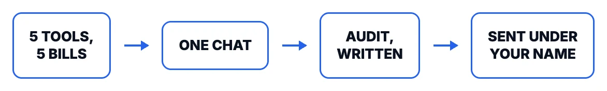
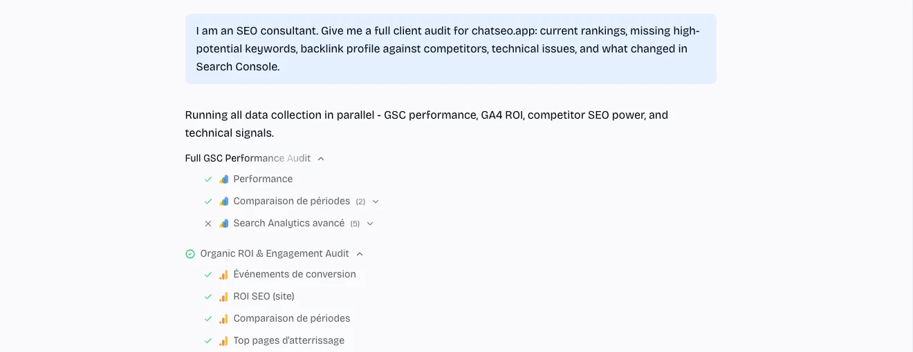
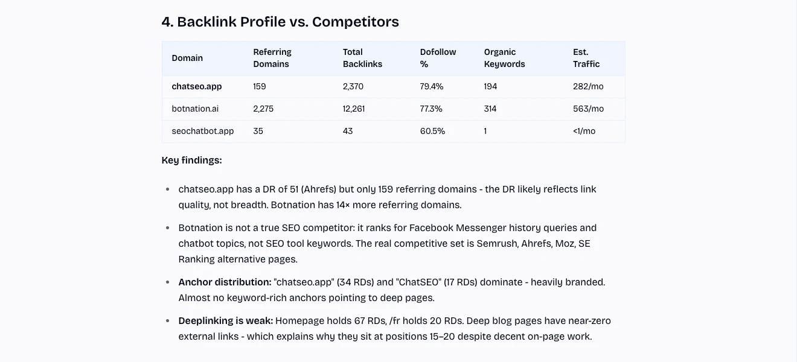
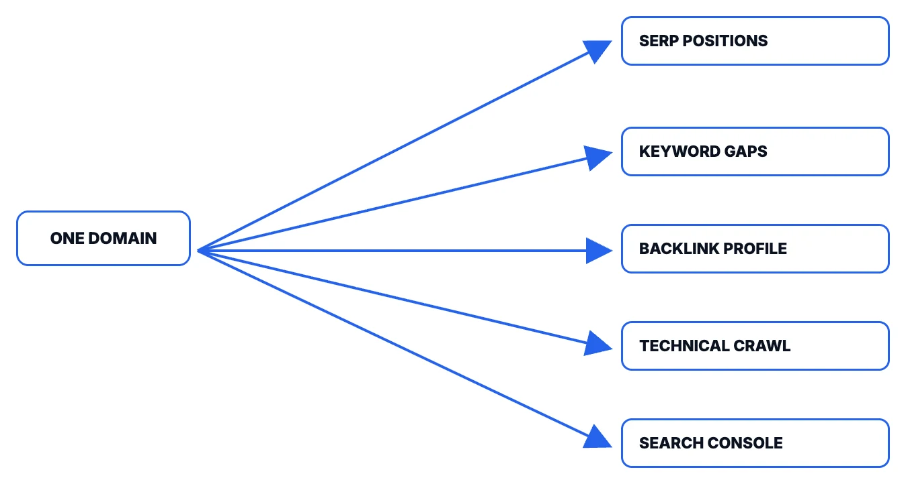

Rank tracker, keyword tool, backlink tool, crawler, Search Console. Five subscriptions, five exports, and the real work only starts after: making them agree with each other. Here's the one-conversation version, on a real domain.
600+ customers at ChatSEO. Many of them are consultants and agencies running audits for their own clients.
With Nicholas, on a real client audit

ChatSEO with search console and analytics connected produces amazing in-depth results. Using this helped us to secure a multi year deal with a UK top 100 Law Firm as they were so impressed with our granular level of reporting. On top of this, the team built a new element into the product that we asked for. Highly recommended!
Run it on a client file this afternoon and compare it to your last audit.
One line. This works on a client you've had for years or one you're pitching tomorrow: connect their Search Console for the deepest read, or run it in SEO research mode on any external site with nothing connected at all.
Rankings, keyword gaps, backlinks against named competitors, technical and indexation issues, Search Console, all in parallel, in the same thread.

Book a 15-minute call if you'd rather we ran the first one with you, on a real client file.
Not five CSVs to reconcile by hand. A document: the numbers, who's actually winning and why, and what to fix first.

This ran on chatseo.app itself, live, for this page. Nothing here was cleaned up or shortened afterward.
The client relationship, the constraints the data can't see, the judgment call on what's worth doing this quarter: that's yours. What you no longer do is the collection.
Connect the client's Search Console once. Everything else here works without it, but the comparison against what actually moved (the one thing a rank tracker can't tell you) only exists once it's connected. Do it during onboarding, or the second audit is still a snapshot.
Same coverage, one thread, one conversation that remembers the last one.

| What you used to open | What ChatSEO pulls, in the same thread |
|---|---|
| Rank tracker | Live keyword positions, pulled fresh |
| Keyword tool | Volume, difficulty, and the gaps against named competitors |
| Backlink tool | Referring domains, anchor text, deep-link gaps |
| Crawler | Indexation, technical issues, page-level checks |
| Search Console | What actually moved, period over period |
None of it replaces the judgment a client pays a consultant for. What it replaces is the part nobody bills for: opening five tabs, exporting five files, and making them agree with each other before the real thinking can start.
Pick a domain you already know well and see what it finds that your last audit didn't. Try it yourself with your free credits, or book a call and we'll run the first one with you.
No credit card required · or we'll walk you through it live